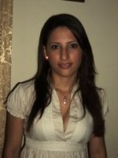

¿Quienes Somos?
Somos un grupo de estudiantes de Ingeniería de Sistemas de la Universidad de Córdoba, el grupo esta compuesto por:
|  |  |
 |
|---|---|---|
Jeyra Beltrán Sierra |
Kamilo Cervantes Salazar |
Jesús M. Herazo Hoyos |